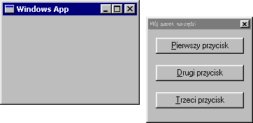

| << Poprzednia czêœæ kursu Spis Strona g³ówna Nastêpna czêœæ kursu >> |
Takie okienka dialogowe, o jakich mówiliœmy do tej pory, nie do wszystkiego da siê wykorzystaæ. I tak na przyk³ad jeœli chcemy zrobiæ aplikacjê sk³adaj¹c¹ siê z kilku okien widocznych za ekranie jednoczeœnie (np. jedno okno g³ówne i drugie okno jako pasek narzêdzi), dialogi modalne staj¹ siê kompletnie nieprzydatne, poniewa¿ taki dialog trzeba zamkn¹æ, by móc znów korzystaæ z g³ównego okna.
Dialogi niemodalne (modeless dialogs) nie posiadaj¹ w³asnej pêtli komunikatów. Wszystko, co siê na nich dzieje, wysy³ane jest do okna-rodzica. Zreszt¹ w tym przypadku okreœlenia "okno-rodzic" i "okno-dziecko" s¹ bardzo adekwatne do sytuacji: niemodalne okna dialogowe s¹ "niesamodzielne" i ca³kowicie podleg³e swym "rodzicom".
Po tej szczypcie teorii czas zakasaæ rêkawy i braæ siê do roboty, czyli do stworzenia takiego niemodalnego okna dialogowego. Za³ó¿my, ¿e chcemy mieæ pasek narzêdzi z trzema przyciskami. Czyli coœ takiego:

Zaczniemy od edycji pliku *.rc:
|
#include <windows.h> #include "pasek.h" IDD_PASEK DIALOGEX 0, 0, 98, 52 STYLE DS_MODALFRAME | WS_POPUP | WS_CAPTION EXSTYLE WS_EX_TOOLWINDOW CAPTION "Mój pasek narzêdzi" FONT 8, "MS Sans Serif" { PUSHBUTTON "&Pierwszy przycisk", IDC_PRZYC1, 7,7,84,14 PUSHBUTTON "&Drugi przycisk", IDC_PRZYC2, 7,31,84,14 PUSHBUTTON "&Trzeci przycisk", IDC_PRZYC3, 7,31,84,14 } |
Nag³ówek pasek.h mo¿e wygl¹daæ jakoœ tak:
|
#define IDD_PASEK 200 #define IDC_PRZYC1 201 #define IDC_PRZYC1 202 #define IDC_PRZYC1 203 |
Jak widaæ, powy¿szy plik zasobów nie ró¿ni siê zbytnio od tego dla dialogu modalnego. Wstawi³em go tylko po to, by pokazaæ, jak okreœlaæ rozszerzone opcje stylów w pliku zasobów. Dla naszego dialogu u¿yjemy rozszerzonego stylu WS_EX_TOOLWINDOW, który zamienia nasze okienko na pasek narzêdzi. Charakteryzuje siê on przede wszystkim mniejszym paskiem tytu³owym. Jeœli chcemy skorzystaæ z rozszerzonych stylów dla dialogu, definiujemy go w pliku *.rc s³owem DIALOGEX (zamiast zwyk³ego DIALOG). Sta³e rozszerzonych stylów podajemy po s³owie EXSTYLE.
Oczywiœcie rozszerzone style mo¿na równie dobrze stosowaæ dla dialogów niemodalnych jak i modalnych. W budowie pliku zasobów tych dwóch rodzajów dialogów nie ma, jak ju¿ powiedzia³em, ¿adnej ró¿nicy. Pojawia siê ona dopiero przy makrze wywo³uj¹cym dialog. Dla dialogów niemodalnych bêdzie to CreateDialog. Sk³adnia jest identyczna, jak w przypadku DialogBox:
| int CreateDialog(HINSTANCE hInstance, LPCTSTR lpTemplate, HWND hWndParent, DLGPROC lpDialogFunc) | |
| Argument | Znaczenie |
|---|---|
| hInstance | Uchwyt do naszej aplikacji |
| lpTemplate | Identyfikator wzorca dialogu |
| hWndParent | Uchwyt okna wywo³uj¹cego dialog |
| lpDialogFunc | WskaŸnik do procedury dialogowej |
Podobna jest te¿ budowa procedury dialogowej dialogu niemodalnego. Jedyna istotna ró¿nica to sposób zamykania dialogu. Tym razem nie wywo³ujemy EndDialog, tylko niszczymy okno poleceniem DestroyWindow, tak jak w przypadku "zwyk³ego" (nie-dialogowego) okna. Oczywiœcie okno niszczymy zazwyczaj tylko raz, a konkretnie przy wychodzeniu z programu. Czasami jednak u¿ytkownik mo¿e zapragn¹æ schowaæ na jakiœ czas swój pasek narzêdzi (np. ¿eby nie zas³ania³ mu uroczego widoku na inne okienko ;-)), a póŸniej znowu je pokazaæ, gdy bêdzie potrzebne. Wtedy mo¿emy skorzystaæ z us³ug funkcji ShowWindow. Ukrywamy okno tak:
| ShowWindow(hwnd, SW_HIDE); |
...a z powrotem pokazujemy tak:
| ShowWindow(hwnd, SW_SHOW); |
Kodu przyk³adowego wykorzystuj¹cego dialog niemodalny nie bêdzie, gdy¿ jest on prawie identyczny z tym do dialogów modalnych (a tak naprawdê to nie chce mi siê go kopiowaæ ;-)).
Uczyniwszy nasz dialog niemodalnym, pozbawiliœmy go przy okazji pewnej cennej cechy: domyœlnej obs³ugi prze³¹czania siê miêdzy kontrolkami za pomoc¹ klawisza TAB. Na szczêœcie jest na to sposób. Wystarczy wywo³aæ funkcjê IsDialogMessage. Jak sugeruje nazwa, funkcja ta sprawdza, czy podany komunikat pochodzi od podanego dialogu, czy te¿ nie. Jeœli pochodzi, funkcja obs³u¿y ten komunikat (zapewniaj¹c przy okazji automatyczn¹ obs³ugê TAB-a) i zwróci TRUE. Tak wiêc modyfikuj¹c pêtlê komunikatów w nastêpuj¹cy sposób:
|
while(GetMessage(&msg, NULL, 0, 0)) { if(!IsDialogMessage(hPasek, &msg)) { TranslateMessage(&msg); DispatchMessage(&msg); } } |
...zyskujemy automatyczn¹ obs³ugê TAB-a równie¿ w niemodalnym dialogu. Co wiêcej, sztuczkê tê mo¿na wykorzystaæ tak¿e dla "zwyk³ego" okna, podaj¹c funkcji IsDialogMessage uchwyt tego okna jako argument! G³upi Windows pomyœli sobie, ¿e okno jest dialogiem i zapewni mu obs³ugê TAB-a :-).
| << Poprzednia czêœæ kursu Spis Strona g³ówna Nastêpna czêœæ kursu >> |